About
I am currently a Research Assistant at Sichuan University, working with Prof. Chao Song in the West China Health and Medical Geography group. I will join the Department of Geography at Indiana University Bloomington as a Ph.D. student.
My work focuses on spatiotemporal big data prediction, health GIS, and Bayesian spatiotemporal modeling for health and socio-economic applications. My academic background spans Geographic Information Science, Geological Resources, and Geological Engineering.
Interests
- Geography
- Geographic Information Science
- Health GIS
- Spatiotemporal Big Data Prediction
- Bayesian Spatiotemporal Modeling
Education
Indiana University Bloomington- Incoming Ph.D. Student, Department of Geography
- Starting 2026
- M.Eng. in Geological Resources and Geological Engineering
- 2022 - 2025
- B.Sc. in Geographic Information Science
- 2018 - 2022
Experiences
Projects
Publications
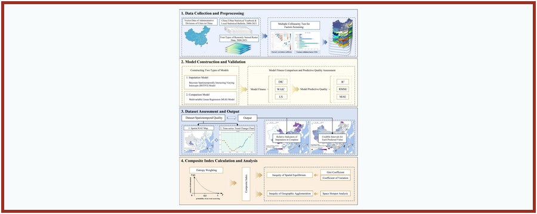

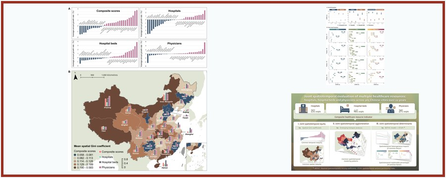
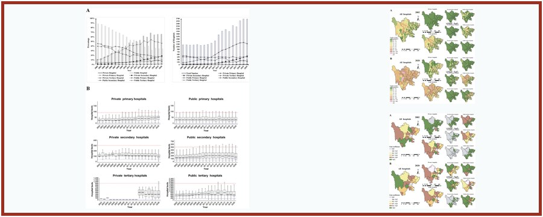
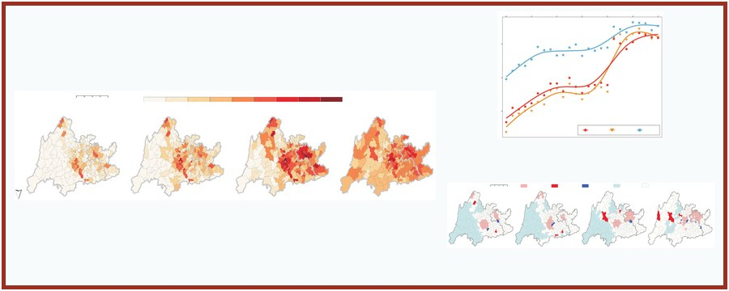
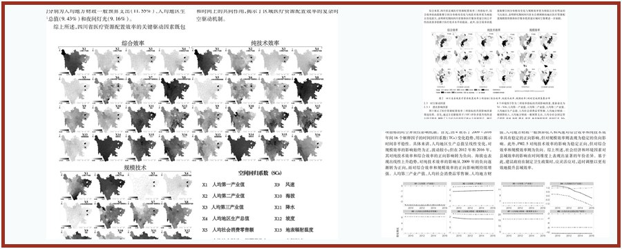
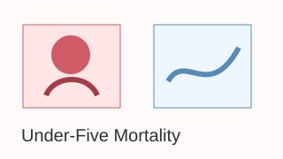
Software Copyrights
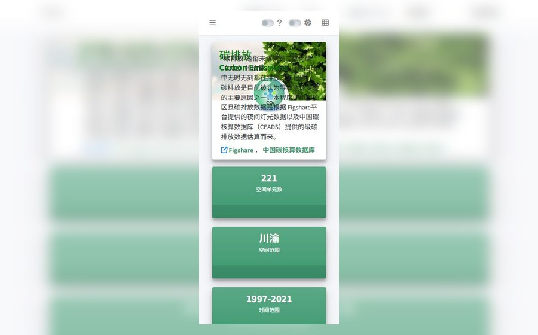
Carbon Emission Spatiotemporal Analysis System
Based on spatial autocorrelation. Registration No. 2024SR0857063. [App]
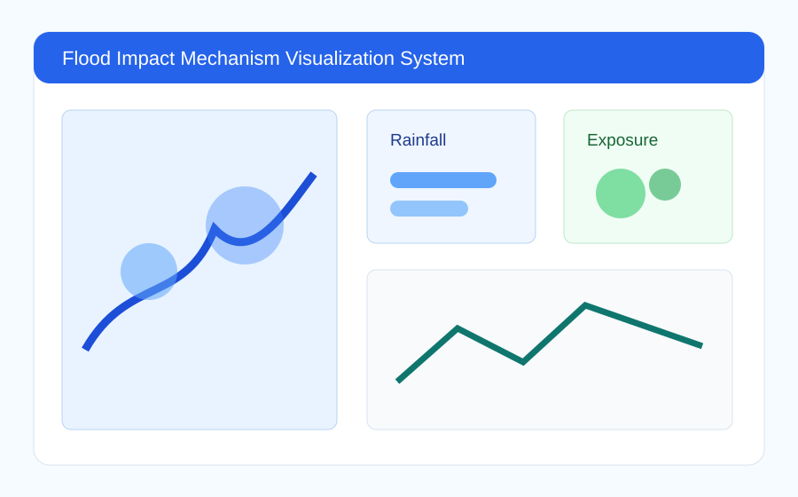
Flood Impact Mechanism Visualization System
Spatiotemporal analysis and visualization system. Registration No. 2024SR1207038; Certificate No. 13610911.
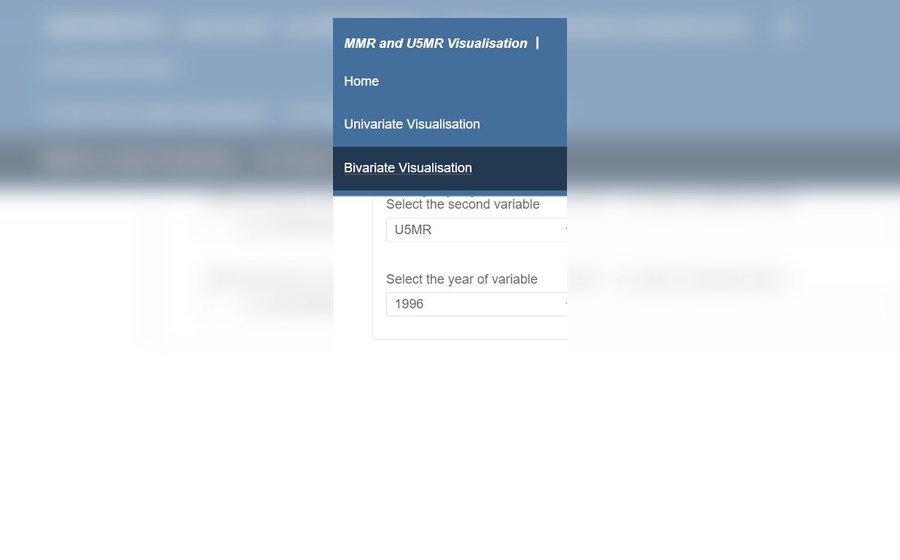
R-Shiny Bivariate Visualization System
Developed with Zhangying Tang, Kaiwei Lin, and Guoqiang Yan. [App]
Competitions, Conferences, and Practice
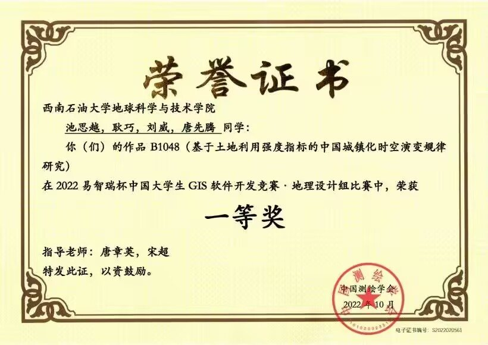
2022 Esri Cup GIS Software Development Competition
First Prize, Geography Design Group. Project on China's urbanization based on land-use intensity indicators.
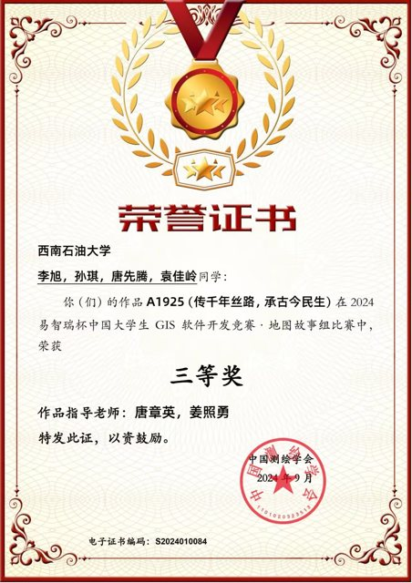
2024 Esri Cup GIS Software Development Competition
Third Prize, Story Map Group. Project: Inheriting the Millennium Silk Road and Livelihood Across Past and Present.
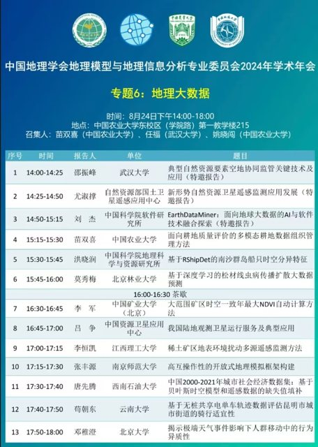
Conferences and Field Practice
Presented at the 2024 GSC academic annual meeting; participated in cartography symposiums and land-change field survey practice.
Selected Honors
- Second-Class Academic Scholarship, Southwest Petroleum University, first year of master's study.
- Third-Class Academic Scholarship, Southwest Petroleum University, second year of master's study.